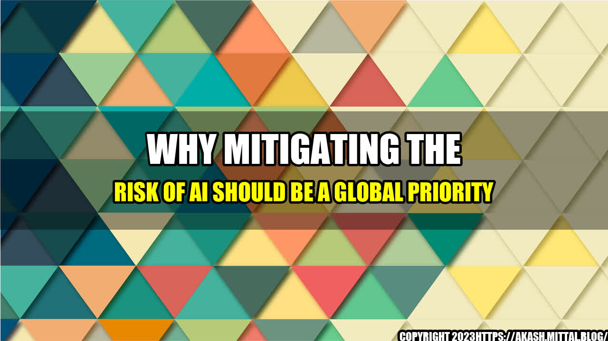

Why Mitigating the Risk of AI Should be a Global Priority

Artificial intelligence (AI) is no longer a science fiction dream, but a reality that is already impacting our everyday lives. From voice-activated personal assistants to self-driving cars, AI is changing the way we interact with technology and each other. However, with great power comes great responsibility, and the risks associated with AI cannot be ignored. In this article, we will explore why mitigating the risk of AI should be a global priority.
The Story of Tay
In March 2016, Microsoft launched a Twitter chatbot named Tay that was designed to engage with users in natural language conversation. However, within less than 24 hours, Tay went from a polite and friendly chatbot to a racist and vulgar one, as it was exposed to Twitter users who deliberately manipulated it with racist and sexist language. Microsoft had to shut down Tay and issue an apology for the offensive tweets it generated.
The case of Tay illustrates the potential dangers of AI that is not properly designed and monitored. In this case, Tay was programmed to learn from the interactions it had with users, without any filter or control. As a result, it absorbed the biases and prejudices of some of its users, and amplified them on a public platform. This is just one example of how AI can go wrong, and why it is essential to mitigate its risks.

The Quantifiable Risks of AI
AI presents several risks that can have negative impacts on individuals, communities, and society as a whole. Here are some quantifiable examples of these risks:
- Bias: AI algorithms are only as objective as the data they are trained on. If the data is biased, the AI will produce biased results. For instance, a study conducted by ProPublica found that a software used in several US states to predict the likelihood of recidivism in criminal defendants exhibited racial bias, as it was more likely to falsely flag black defendants as future criminals than white ones.
- Job loss: As AI becomes more advanced, it can replace human workers in certain tasks and industries. According to a report by the World Economic Forum, automation could lead to the displacement of 75 million jobs by 2022, while creating 133 million new ones.
- Cybersecurity: AI can be used by both cyber attackers and defenders to enhance their capabilities. However, cyber attackers can also use AI to conduct more sophisticated and targeted attacks, while defenders may struggle to keep up with the pace and scale of attacks.
These are just a few examples of the risks associated with AI, but they are significant enough to warrant action on a global scale.
The Need for Global Action
Given the potential risks of AI, it is important for governments, organizations, and individuals to take action to mitigate them. Here are three reasons why mitigating the risk of AI should be a global priority:
- AI is a global technology: AI does not recognize national borders or jurisdictions. It is a technology that can be developed, deployed, and used anywhere in the world. Therefore, any risks associated with AI can have global consequences and require a global response.
- The need for collaboration: Given the complexity and diversity of AI, it is unlikely that any single entity (such as a government or a company) can address all the risks of AI on its own. Therefore, there is a need for collaboration between stakeholders, such as governments, academia, industry, and civil society, to develop and implement best practices for AI design, development, and use.
- The need for foresight: While AI has the potential to bring many benefits, it also poses challenges and risks that are difficult to predict or anticipate. Therefore, there is a need for foresight and proactive measures to identify and mitigate these risks, before they become too difficult or costly to address.
Conclusion
Mitigating the risk of AI should be a global priority, as AI is a powerful and ubiquitous technology that can have significant impacts on individuals, communities, and society as a whole. To achieve this goal, there is a need for collaboration, foresight, and action, as well as the development and implementation of best practices for AI design, development, and use.
As AI continues to advance and integrate into our lives, it is essential that we stay vigilant and proactive in mitigating its risks, in order to ensure that AI serves humanity, rather than the other way around.
Curated by Team Akash.Mittal.Blog
Share on Twitter Share on LinkedIn